All work
Sniffi
Sniffi brings dog profiles, friendships, walks, and community into a shared mobile experience. This case study presents a UI redesign and visual system, from the information architecture to onboarding, FlowerType, the Garden, and Explore.
Original concept and research by Yuanqi Zhang. UI redesign and visual system by Yuhan Hu.
View full process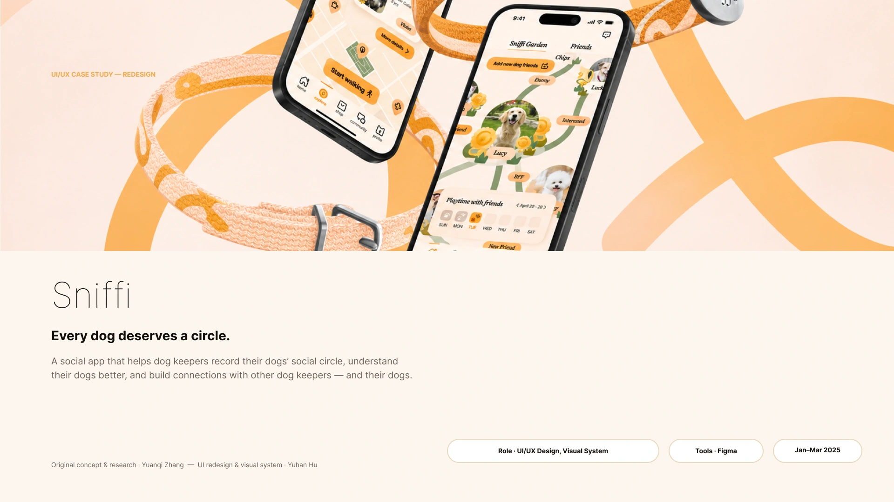
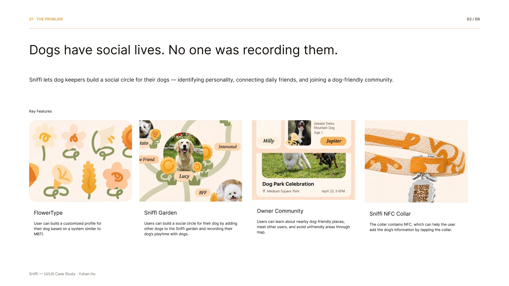
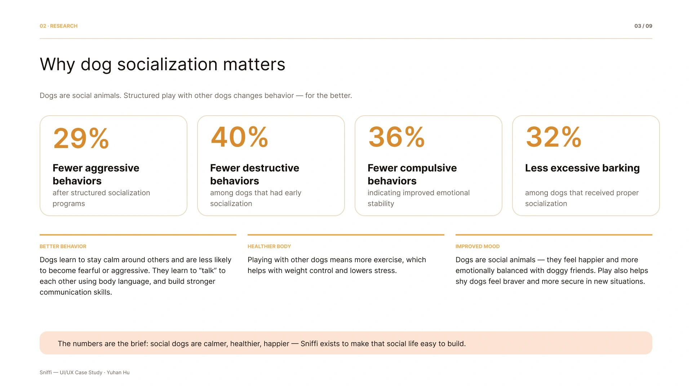
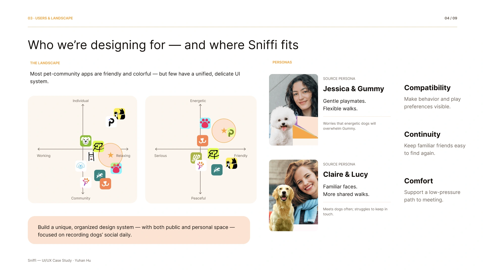
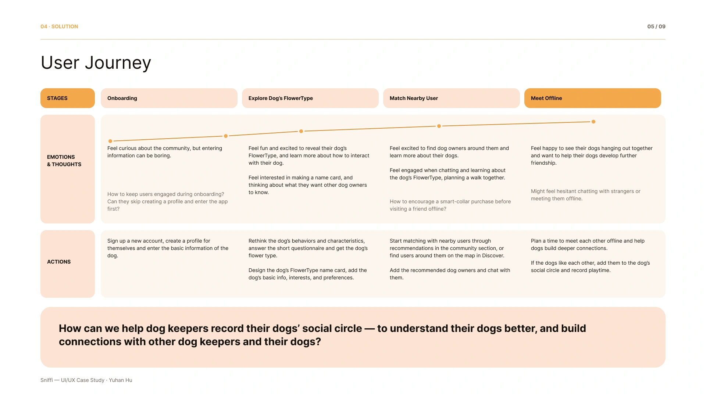
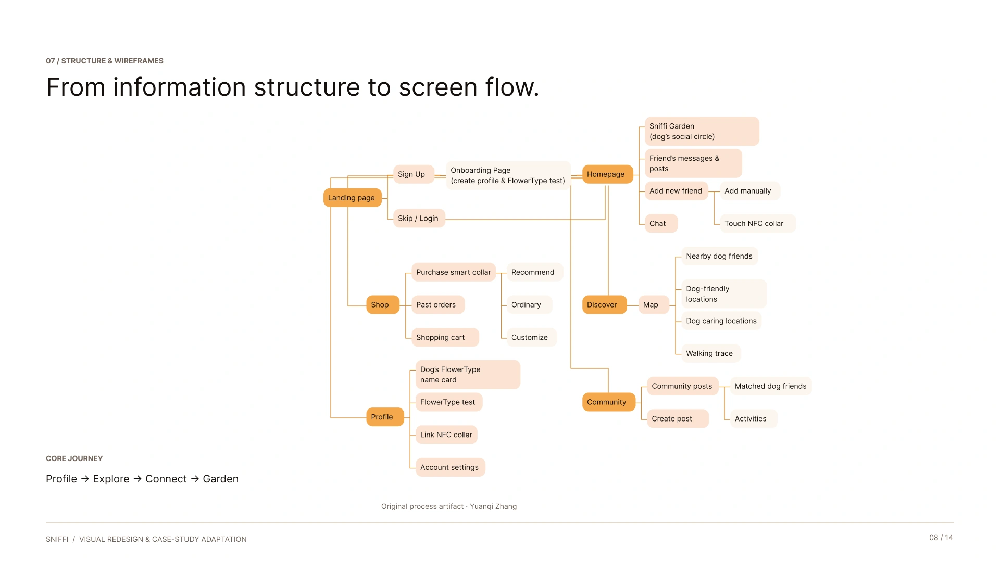
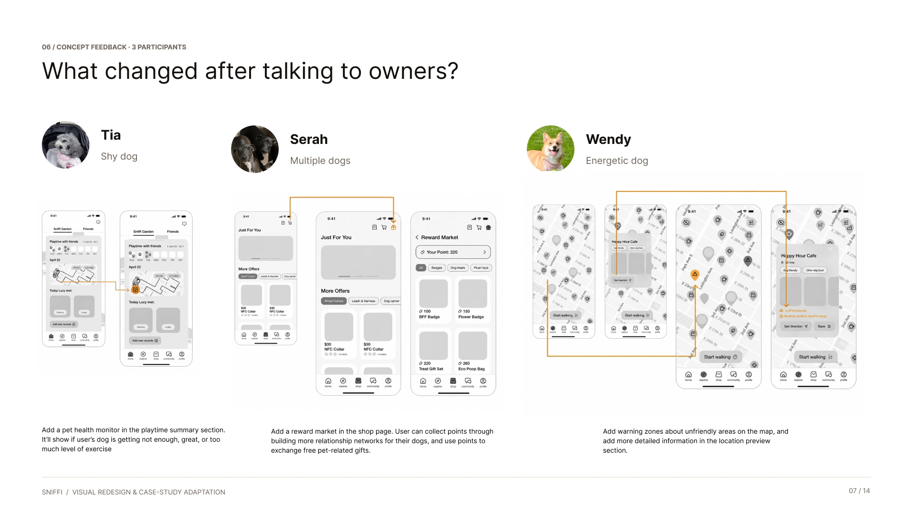
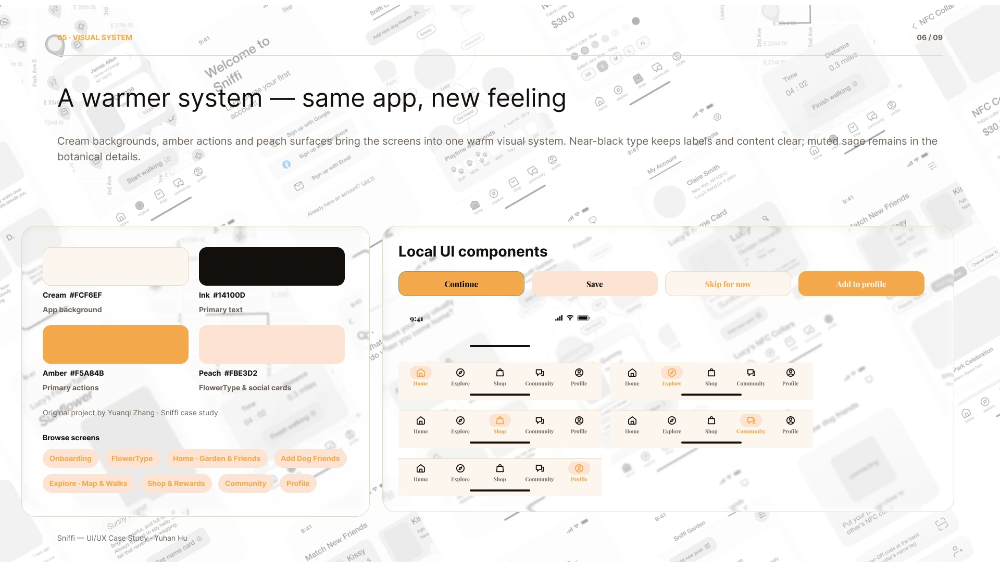
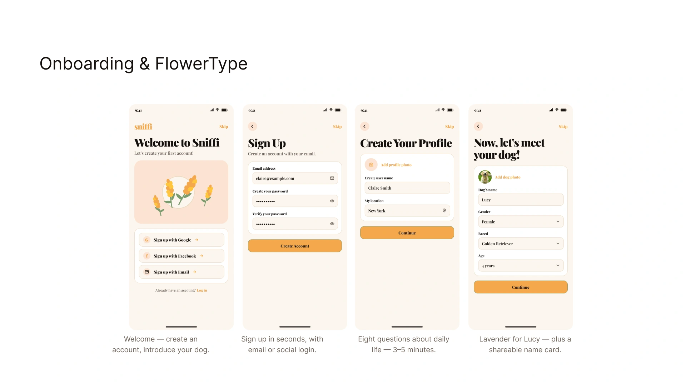
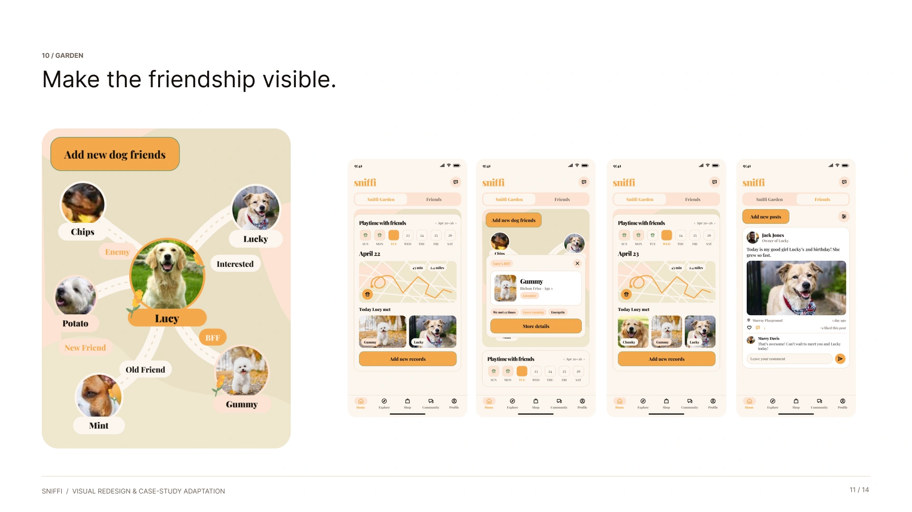
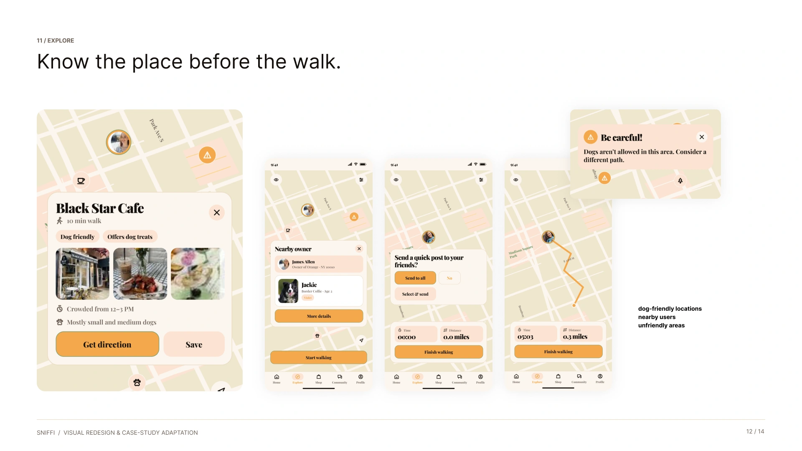
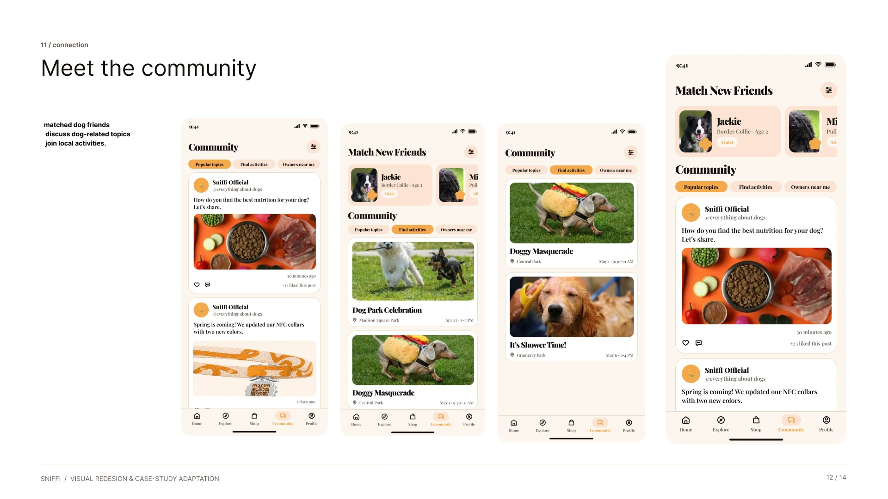